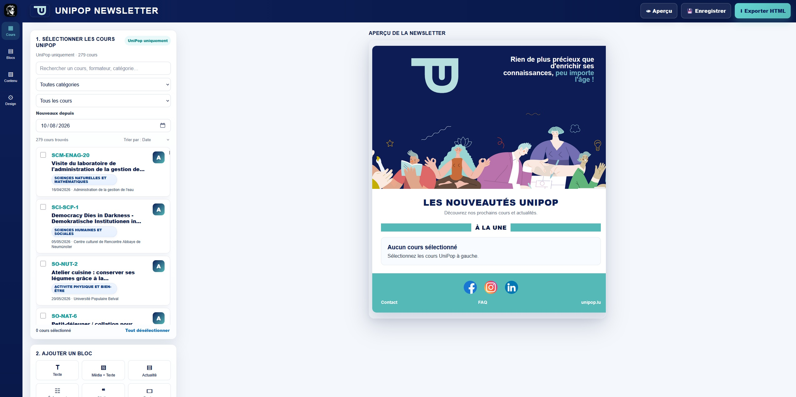

Newsletter Tool
A custom newsletter builder connected directly to the UniPop course database, designed to simplify newsletter production and generate ready-to-use HTML for Mailjet.
Overview
The Newsletter Tool is a custom browser-based application developed to make the creation of UniPop newsletters faster, easier and more consistent.
Instead of manually assembling newsletter content for every edition, the application provides a dedicated editing environment with reusable content blocks and direct access to current UniPop course information.
Project details
The goal of the project was to build a more comfortable and efficient editing tool for producing the UniPop newsletters. The application runs directly through GitHub Pages and can therefore be used from a standard web browser without installing dedicated software.
One of the most important features is the connection to the UniPop course database. The builder can retrieve current course information and quickly display the latest available courses together with their existing content.
This significantly reduces manual copying and allows relevant courses to be selected and integrated into a newsletter much faster.
Once the newsletter is complete, the application generates the required HTML code. This HTML can then be imported into Mailjet for the final mailing and distribution.
Course database connection
Current UniPop courses can be retrieved directly from the course data source instead of being entered manually.
Fast course selection
The latest available courses and their existing content can be displayed and selected directly inside the builder.
Visual editing
Reusable editorial and course blocks provide a faster and more comfortable workflow when assembling a new newsletter.
HTML generation
The completed newsletter is converted into HTML that can be transferred directly into the existing Mailjet workflow.
Browser based
The application runs through GitHub Pages and requires no locally installed software.
Consistent output
Standardised newsletter components help maintain a consistent visual structure across different editions.
Technology
The Newsletter Tool is a lightweight web application hosted through GitHub Pages. HTML, CSS and JavaScript provide the editing interface, content management and dynamic newsletter generation.
The application reads the UniPop course data and transforms selected courses into newsletter components. Course information can therefore be reused directly instead of being manually recreated for every newsletter.
The final result is generated as newsletter-compatible HTML and can subsequently be imported into Mailjet for mailing and distribution.